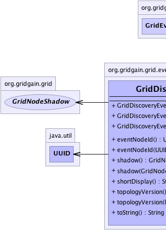
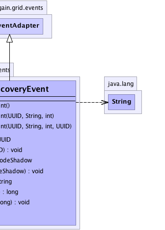

org.gridgain.grid.lang.GridMetadataAwareAdapter
org.gridgain.grid.events.GridEventAdapter
org.gridgain.grid.events.GridDiscoveryEvent
org.gridgain.grid.lang.GridMetadataAwareAdapter
org.gridgain.grid.events.GridEventAdapter
org.gridgain.grid.events.GridDiscoveryEvent
|
GridGain™ 3.6.0c
Community Edition |
|||||||||
| PREV CLASS NEXT CLASS | FRAMES NO FRAMES | |||||||||
| SUMMARY: NESTED | FIELD | CONSTR | METHOD | DETAIL: FIELD | CONSTR | METHOD | |||||||||
java.lang.Object
public class GridDiscoveryEvent
Grid discovery event.
Grid events are used for notification about what happens within the grid. Note that by design GridGain keeps all events generated on the local node locally and it provides APIs for performing a distributed queries across multiple nodes:
GridProjection.remoteEvents(org.gridgain.grid.lang.GridPredicate , long, org.gridgain.grid.lang.GridPredicate[]) -
querying events occurred on the nodes specified, including remote nodes.
GridProjection.remoteEventsAsync(org.gridgain.grid.lang.GridPredicate , long, org.gridgain.grid.lang.GridPredicate[]) -
asynchronously querying events occurred on the nodes specified, including remote nodes.
Grid.localEvents(org.gridgain.grid.lang.GridPredicate[]) -
querying only local events stored on this local node.
Grid.addLocalEventListener(GridLocalEventListener , int...) -
listening to local grid events (events from remote nodes not included).
Grid.waitForEventAsync(org.gridgain.grid.lang.GridPredicate , int...)Grid.waitForEvent(long, Runnable, org.gridgain.grid.lang.GridPredicate , int...)
It is highly recommended to enable only those events that your application logic requires
by using either GridConfiguration.getExcludeEventTypes() or
GridConfiguration.getIncludeEventTypes() methods in GridGain configuration. Note that certain
events are required for GridGain's internal operations and such events will still be generated but not stored by
event storage SPI if they are disabled in GridGain configuration.
| Wiki | |
| Forum |
GridEventType.EVT_NODE_METRICS_UPDATED,
GridEventType.EVT_NODE_FAILED,
GridEventType.EVT_NODE_JOINED,
GridEventType.EVT_NODE_LEFT,
GridEventType.EVT_NODE_RECONNECTED,
GridEventType.EVT_NODE_SEGMENTED,
GridEventType.EVTS_DISCOVERY_ALL,
GridEventType.EVTS_DISCOVERY,
Serialized Form
|  |  |
| Constructor Summary | |
|---|---|
GridDiscoveryEvent()
No-arg constructor. |
|
GridDiscoveryEvent(UUID nodeId,
String msg,
int type)
Creates new discovery event with given parameters. |
|
GridDiscoveryEvent(UUID nodeId,
String msg,
int type,
UUID evtNodeId)
Creates new discovery event with given parameters. |
|
| Method Summary | |
|---|---|
UUID |
eventNodeId()
Gets ID of the node that caused this event to be generated. |
void |
eventNodeId(UUID evtNodeId)
Sets ID of the node this event is referring to. |
GridNodeShadow |
shadow()
Gets node shadow. |
void |
shadow(GridNodeShadow shadow)
Sets node shadow. |
String |
shortDisplay()
Gets a shortened version of toString() result. |
long |
topologyVersion()
Gets topology version if this event is raised on topology change and configured discovery SPI implementation supports topology versioning. |
void |
topologyVersion(long topVer)
Sets topology version. |
String |
toString()
|
| Methods inherited from class org.gridgain.grid.events.GridEventAdapter |
|---|
compareTo, equals, hashCode, id, localOrder, message, message, name, nodeId, nodeId, timestamp, type, type |
| Methods inherited from class org.gridgain.grid.lang.GridMetadataAwareAdapter |
|---|
addMeta, addMetaIfAbsent, addMetaIfAbsent, allMeta, clone, copyMeta, copyMeta, hasMeta, hasMeta, meta, putMetaIfAbsent, putMetaIfAbsent, readExternalMeta, removeMeta, removeMeta, replaceMeta, writeExternalMeta |
| Methods inherited from class java.lang.Object |
|---|
finalize, getClass, notify, notifyAll, wait, wait, wait |
| Methods inherited from interface org.gridgain.grid.GridMetadataAware |
|---|
addMeta, addMetaIfAbsent, addMetaIfAbsent, allMeta, copyMeta, copyMeta, hasMeta, hasMeta, meta, putMetaIfAbsent, putMetaIfAbsent, removeMeta, removeMeta, replaceMeta |
| Constructor Detail |
|---|
public GridDiscoveryEvent()
public GridDiscoveryEvent(UUID nodeId,
String msg,
int type,
UUID evtNodeId)
nodeId - Local node ID.msg - Optional event message.type - Event type.evtNodeId - ID of the node that caused this event to be generated.
public GridDiscoveryEvent(UUID nodeId,
String msg,
int type)
nodeId - Local node ID.msg - Optional event message.type - Event type.| Method Detail |
|---|
public String shortDisplay()
toString() result. Suitable for humans to read.
shortDisplay in interface GridEventshortDisplay in class GridEventAdaptertoString() result.public void eventNodeId(UUID evtNodeId)
evtNodeId - Event node ID. Note that event node ID is different from node ID
available via GridEventAdapter.nodeId() method.public UUID eventNodeId()
A locally recorded the event that a remote node
B joined the topology. In this case this method will return ID of B and
method GridEventAdapter.nodeId() will return ID of A
public void shadow(GridNodeShadow shadow)
shadow - Node shadow to set.@Nullable public GridNodeShadow shadow()
null if one wasn't set.public void topologyVersion(long topVer)
topVer - Topology version.public long topologyVersion()
0 if configured discovery SPI implementation
does not support versioning.public String toString()
toString in class GridEventAdapter
|
GridGain™ 3.6.0c
Community Edition |
|||||||||
| PREV CLASS NEXT CLASS | FRAMES NO FRAMES | |||||||||
| SUMMARY: NESTED | FIELD | CONSTR | METHOD | DETAIL: FIELD | CONSTR | METHOD | |||||||||
|
GridGain - Real Time Big Data
|
|

|
|